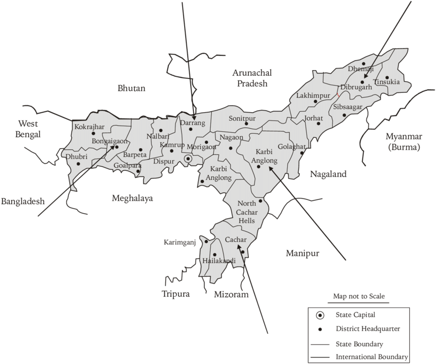

Nestled in the northeastern part of India, Assam is a land of diverse landscapes and rich cultural heritage.
Famous for its lush tea gardens, rolling hills, and the mighty Brahmaputra River, the state offers a unique blend of natural beauty and vibrant traditions.
Assam is renowned for its wildlife sanctuaries, including Kaziranga National Park, home to the one-horned rhinoceros, and Manas National Park, known for its rich biodiversity.
The region is also celebrated for its traditional festivals like Bihu, its vibrant handicrafts, and the enchanting beauty of the Majuli Island, one of the world's largest river islands.
|
 |